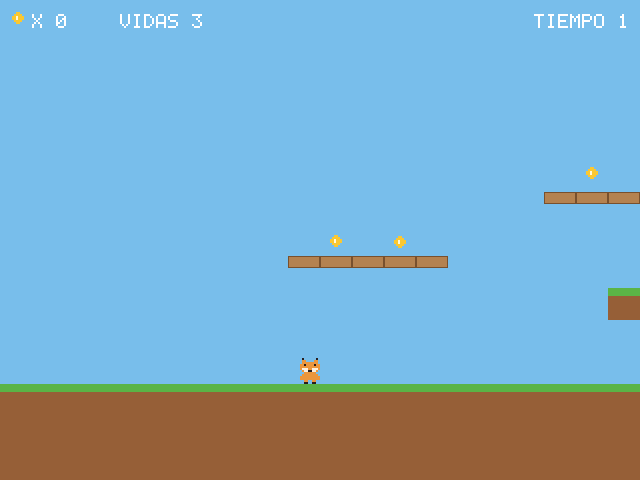
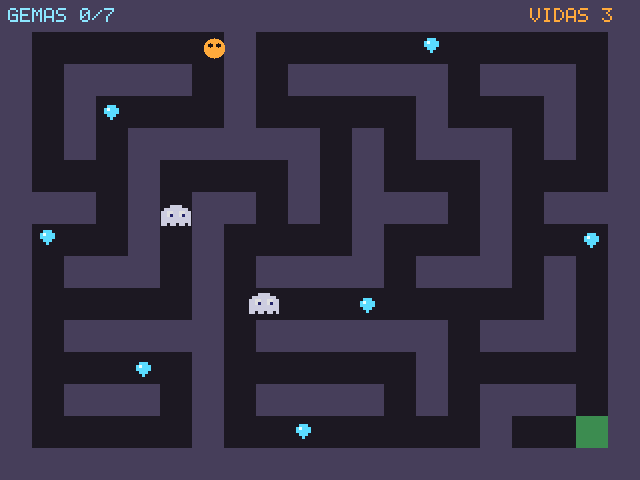
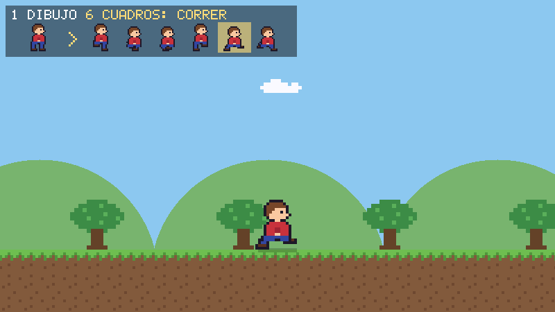
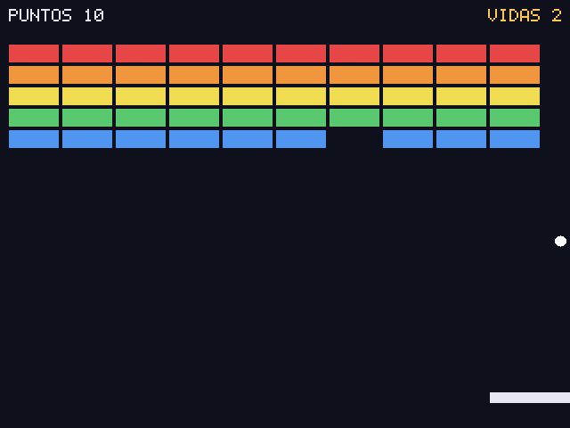
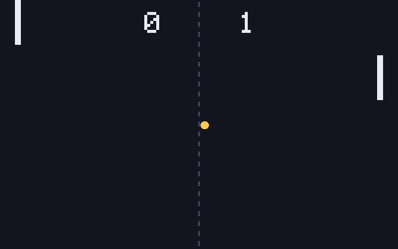
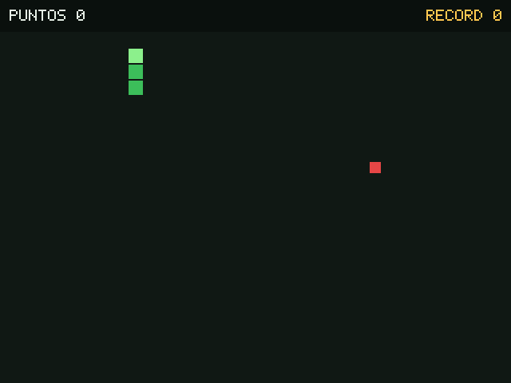

Lince es un lenguaje para hacer videojuegos. Ventana, dibujo, sprites, teclado, ratón, mando y sonido incluidos; C puro sin dependencias para compilarlo; mensajes de error claros y ejecutables autónomos.
Una ventana y un bucle de juego en diez líneas; y debajo, un lenguaje completo: clases, herencia, interfaces, generadores, closures y manejo de errores.
importar "juego" juego.abrir("Sprites", 640, 480) # Un sprite dibujado con texto: cada letra es un color sea lince = juego.sprite([ "n....n", "nnnnnn", "nbnnbn", "nnnnnn" ], {"n": "#e8892b", "b": "#ffffff"}) sea fondo = juego.imagen("fondo.png") # PNG, JPG o BMP sea salto = juego.sonido("salto.wav") juego.musica("tema.ogg") # en bucle, leída poco a poco sea x = 320 mientras juego.abierto() { x = x + juego.eje("izq_x") * 200 * juego.dt() # mando si juego.tecla_pulsada("espacio") { juego.reproducir(salto) } juego.dibujar(fondo, 0, 0) juego.dibujar(lince, x, 300, {"escala": 6, "espejo": x < 320}) juego.presentar() }
# Variables y tipos sea nombre = "Ana" fijo PI = 3.14159 sea lista notas = [9, 7, 10] # Función con valor por defecto funcion saludar(val texto nombre, val texto saludo = "Hola"): texto { devolver saludo + ", " + nombre } escribir(saludar("Mundo")) # Hola, Mundo escribir(saludar("Lince", "Bienvenido")) # Bienvenido, Lince # Bucles para cada numero n en rango(5) { escribir(n) } # Closures funcion multiplicador(val numero factor): funcion { devolver funcion(val numero x): numero { devolver x * factor } } sea doble = multiplicador(2) escribir(doble(5)) # 10
interfaz Forma { funcion area(): numero funcion describir(): texto } clase Rectangulo implementa Forma { funcion crear(val numero ancho, val numero alto): nulo { mi.ancho = ancho mi.alto = alto } funcion area(): numero { devolver mi.ancho * mi.alto } funcion describir(): texto { devolver "Rectángulo " + mi.ancho + "x" + mi.alto } } clase Cuadrado extiende Rectangulo { funcion crear(val numero lado): nulo { padre(lado, lado) # llama al constructor del padre } } sea c = Cuadrado(5) escribir(c.area()) # 25 escribir(c.describir()) # Rectángulo 5x5
# Generadores — secuencias perezosas generador pares(val numero hasta): numero { para cada numero n en rango(hasta) { si n % 2 == 0 { producir n } } } para cada numero n en pares(10) { escribir(n) # 0, 2, 4, 6, 8 } # Fibonacci infinito (evaluación perezosa) generador fibonacci(): numero { sea a = 0 sea b = 1 mientras verdadero { producir a sea tmp = a + b a = b b = tmp } } sea gen = fibonacci() para cada numero _ en rango(8) { escribir(gen.siguiente()) # 0 1 1 2 3 5 8 13 }
# Manejo de errores estructurado intentar { sea datos = json.parsear(archivos.leer("config.json")) escribir(datos["version"]) } capturar (ErrorRango e) { escribir("Clave no encontrada: " + e.mensaje) } capturar (ErrorIO e) { escribir("No se pudo leer el archivo: " + e.mensaje) } capturar (error e) { escribir("Error inesperado: " + e.mensaje) } finalmente { escribir("Fin del proceso") } # Tipos de error nativos: # error, ErrorTipo, ErrorRango, ErrorIO # ErrorDivision, ErrorValor
importar "juego" importar "matematica" juego.abrir("Mi primer juego", 800, 600) sea x = 100 mientras juego.abierto() { si juego.tecla("derecha") { x = x + 300 * juego.dt() } si juego.tecla("izquierda") { x = x - 300 * juego.dt() } juego.limpiar([20, 20, 30]) juego.circulo(x, 300, 20, "#ffc850") juego.texto("Flechas para mover", 10, 10, 3) juego.presentar() # muestra y espera a 60 fps }
Pong, serpiente, rompeladrillos, pájaro saltarín, esquiva, memoria, tres en raya, un plataformas con cámara y sprites, una mazmorra de tiles con fantasmas que te persiguen y un paseo con animaciones generadas a partir de un solo dibujo. Cada uno es un solo archivo en examples/.






Sin magia, sin frameworks gigantes, sin configuraciones misteriosas.
Palabras clave, mensajes de error y documentación en español. Programar no debería requerir saber inglés.
Guarda el archivo con el juego en marcha y se actualiza al momento, sin cerrar la ventana y con el jugador donde estaba. Si te equivocas, el error sale en la propia ventana.
lince compilar empaqueta tu programa y los archivos que importa en un único ejecutable. Se copia a otra máquina y funciona: sin instalar Lince, sin JVM.
Un solo binario compilado con gcc y make, en Linux y en Windows. Para abrir ventanas usa SDL2, que se carga al ejecutar: no hace falta para compilar.
Mensajes en español con número de línea exacto. Sin stack traces crípticos. El error dice exactamente qué falló.
Ventana, dibujo 2D, imágenes y sprites, mapas de tiles, animaciones, partículas, escenas, teclado, ratón, mando, sonido, cámara y colisiones; más matemáticas, texto, archivos y JSON para tus partidas guardadas.
Reparte tu código en archivos y dale un espacio de nombres con
importar "./x" como x. Las rutas se
resuelven junto al archivo que importa, así que una librería funciona desde
cualquier sitio.
Ejecuta lince sin argumentos para entrar al REPL con historial persistente. Ideal para explorar y probar.
Importa lo que necesitas. Sin instalación adicional.
Ejecuta tus programas directamente mientras desarrollas. Cuando quieras repartirlos, empaquétalos en un solo ejecutable: el compilador es parte del mismo binario, sin herramientas extra.
De una ventana vacía a Lluvia de estrellas, un juego completo con portada, puntos, vidas y récord, en seis pasos. Cada paso es el programa entero, con lo nuevo marcado, y se ejecuta al generar la página: lo que copias funciona.
Los ejemplos del manual no están escritos a mano: son archivos
.lince del repositorio que se ejecutan al
generar la página, y lo que se publica debajo de cada uno es su salida real. Si el
lenguaje cambia de comportamiento, la integración continua lo detecta, así que la
página no puede quedarse obsoleta en silencio.
Lo más fácil es descargarlo ya compilado para Linux o Windows: se descomprime y se usa. Para compilarlo tú solo necesitas gcc y make. Para jugar, SDL2.
$ git clone https://github.com/arreina/lince.git $ cd lince && make $ ./lince examples/01_pong.lince # Para abrir ventanas $ sudo apt install libsdl2-2.0-0 # Opcional: instalar globalmente $ sudo make install
$ pacman -S mingw-w64-ucrt-x86_64-gcc make mingw-w64-ucrt-x86_64-SDL2 $ git clone https://github.com/arreina/lince.git $ cd lince && make $ ./lince examples/01_pong.lince # Para compartir un juego: carpeta y .zip con todo $ ./lince repartir mi_juego.lince
Clona el repositorio, ejecuta make y abre uno de los minijuegos para empezar a cambiarlo.